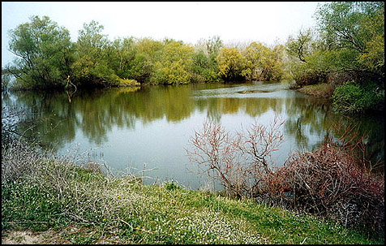
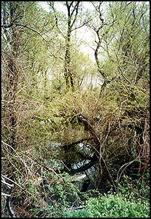

|
Παρυδάτια δενδρώδης βλάστηση |
|
|
Salix spp. |
Ιτιά |
|
Populus spp. |
Λεύκα |
|
Platanus orientalis |
Πλάτανος |
|
Fraxinus angustifolia |
Φράξος- |
|
Alnus spp. |
Σκλήθρα |
|
Ulmus campestris |
Φτελιά |
Κατά μήκος του ποταμού Έβρου και μακρυά από τη θάλασσα, στη βόρεια περιοχή του δέλτα, όπου το έδαφος δεν επηρεάζεται από τα αλμυρά νερά αλλά τροφοδοτείται από τα γλυκά νερά του ποταμού με άφθονα θρεπτικά συστατικά,σχηματίζεται ένας ιδιαίτερος βιότοπος ικανός να διατηρεί μια πυκνή δενδρώδη βλάστηση.
Κατά μήκος του ποταμού σχηματίζεται μια ζώνη παραποτάμιου δάσους,στο οποίο επικρατούν υγρόφιλα είδη φυτών. Τέτοια δενδρώδη είδη είναι :
Populus alba, Populus nigra, Salix fragilis, Salix alba, Ulmus campestris κ.ά.
Πλησιάζοντας την ευθυγράμμισητου ποταμού, παρατηρούνται συστάδες με Fraxinus angustifolia, Ulmus campestris και αραιά Alnus glutinosa.
Στον υποόροφο των δασών αυτών ανάμεσα στα υψηλά δένδρα αναπτύσσονται πολλά αναρριχώμενα φυτά που καθιστούν πολλές φορές το δάσος αδιαπέρατο.Τέτοια είδη είναι : Periploca graeca, Humulus lupulus, Tamus communis, Vitis vinifera, Clematis vitalba κ.ά.
Επίσης λόγω των ανθρώπινων δραστηριοτήτων (κτηνοτροφία) παρατηρείται σημαντικός πληθυσμός νιτρόφιλων ειδών όπως: Rubus caesius, Rubus ulmifolius, Lythrum salicaria, Epilobium angustifolium, Conium maculatum, Silybum marianum, Oenanthe aquatica, Urtica sp. κ.ά.
Τα παραποτάμια δάση αποτελούν σχηματισμούς υψηλής οικολογικής αξίας για τους ακόλουθους λόγους:
